Análise exploratória da primeira base de latências
1 Limpeza
Numa primeira análise optamos pela remoção das portas 015, 5, 01 e 6 devido à alta proporção de zeros, isto é, neste conjunto de dados estas portas foram poucas vezes usadas. Foram retiradas também as colunas set_rex e mem_xchg. As portas 0, 237, 4, 1 e 15 foram analisadas como binárias (foi ou não usada). As demais portas não sofreram tratamentos.
Ainda com base numa análise inicial, foi constatado que a massa de latências está entre 0 e 20 para a mínima e 0 e 40 para a máxima, valores fora desses intervalos são poucos e extremos e cabe a um analista avaliar estes casos.
Com isto foram geradas duas bases:
A primeira, para análise manual por um especialista no assunto. Contemplava valores de latência acima de 20 para mínima e de 40 para máxima. Esta contém 24 casos.
A segunda, para análise estatística. Contemplava valores de latência mínima abaixo de 20 ou máxima abaixo de 40. Esta contém 1103 casos.
Com este subset das bases não havia informação para análise da variável segment e nem da porta 05, portanto elas não foram analisadas.
Base para análise manual:
As seções seguintes referem-se à análise exploratória da base maior, que continha 1103 observações.
2 Análise univariada
Análise de cada uma das variáveis disponíveis na base no que diz respeito a frequência de cada valor e distribuição.
2.1 Tabelas de frequência
Frequência absoluta e relativa de cada nível referente a cada uma das variáveis disponíveis. Isto é, no casos das portas binárias, temos o número de vezes que cada nível aparece na base. No caso das numéricas, trata-se de quantas vezes aquela porta foi usada \(x\) vezes.
2.1.1 lock
| Niveis | Freq | Freq_relativa |
|---|---|---|
| 0 | 974 | 0.883 |
| 1 | 129 | 0.117 |
2.1.2 p0156
| Niveis | Freq | Freq_relativa |
|---|---|---|
| 0 | 458 | 0.415 |
| 1 | 395 | 0.358 |
| 2 | 57 | 0.052 |
| 3 | 58 | 0.053 |
| 4 | 98 | 0.089 |
| 5 | 29 | 0.026 |
| 6 | 8 | 0.007 |
2.1.3 p06
| Niveis | Freq | Freq_relativa |
|---|---|---|
| 0 | 467 | 0.423 |
| 1 | 306 | 0.277 |
| 2 | 195 | 0.177 |
| 3 | 76 | 0.069 |
| 4 | 32 | 0.029 |
| 5 | 17 | 0.015 |
| 6 | 8 | 0.007 |
| 7 | 1 | 0.001 |
| 8 | 1 | 0.001 |
2.1.4 p23
| Niveis | Freq | Freq_relativa |
|---|---|---|
| 0 | 554 | 0.502 |
| 1 | 383 | 0.347 |
| 2 | 166 | 0.15 |
2.1.5 p237
| Niveis | Freq | Freq_relativa |
|---|---|---|
| 0 | 857 | 0.777 |
| 1 | 246 | 0.223 |
2.1.6 p4
| Niveis | Freq | Freq_relativa |
|---|---|---|
| 0 | 688 | 0.624 |
| 1 | 415 | 0.376 |
2.1.7 p1
| Niveis | Freq | Freq_relativa |
|---|---|---|
| 0 | 961 | 0.871 |
| 1 | 142 | 0.129 |
2.1.8 p15
| Niveis | Freq | Freq_relativa |
|---|---|---|
| 0 | 1073 | 0.973 |
| 1 | 30 | 0.027 |
2.1.9 p0
| Niveis | Freq | Freq_relativa |
|---|---|---|
| 0 | 1089 | 0.987 |
| 1 | 14 | 0.013 |
2.1.10 Latência mínima
| Classes | Freq | Freq_relativa |
|---|---|---|
| [0,2] | 653 | 0.592 |
| (2,4] | 218 | 0.198 |
| (4,6] | 55 | 0.05 |
| (6,8] | 7 | 0.006 |
| (8,10] | 3 | 0.003 |
| (10,12] | 56 | 0.051 |
| (12,14] | 28 | 0.025 |
| (14,16] | 63 | 0.057 |
| (16,18] | 4 | 0.004 |
| (18,20] | 0 | 0 |
| (20,22] | 12 | 0.011 |
| (22,24] | 4 | 0.004 |
2.1.11 Latência máxima
| Classes | Freq | Freq_relativa |
|---|---|---|
| [0,2] | 441 | 0.4 |
| (2,4] | 36 | 0.033 |
| (4,6] | 164 | 0.149 |
| (6,8] | 26 | 0.024 |
| (8,10] | 115 | 0.104 |
| (10,12] | 133 | 0.121 |
| (12,14] | 2 | 0.002 |
| (14,16] | 19 | 0.017 |
| (16,18] | 16 | 0.015 |
| (18,20] | 1 | 0.001 |
| (20,22] | 2 | 0.002 |
| (22,24] | 2 | 0.002 |
| (24,26] | 4 | 0.004 |
| (26,28] | 3 | 0.003 |
| (28,30] | 126 | 0.114 |
| (30,32] | 4 | 0.004 |
| (32,34] | 9 | 0.008 |
2.2 Resumos numéricos
Medidas de posição e dispersão para as variáveis numéricas em estudo.
2.2.1 Medidas de posição
| Minimo | Quartil_1 | Media | Mediana | Moda | Quartil_3 | Maximo | |
|---|---|---|---|---|---|---|---|
| p0156 | 0 | 0 | 1.15 | 1 | 0 | 1 | 6 |
| p06 | 0 | 0 | 1.088 | 1 | 0 | 2 | 8 |
| p23 | 0 | 0 | 0.648 | 0 | 0 | 1 | 2 |
| min_lat | 0 | 1 | 3.764 | 1 | 1 | 3 | 23 |
| max_lat | 1 | 1 | 8.572 | 6 | 1 | 11 | 34 |
2.2.2 Medidas de dispersão
| Amplitude | Variancia | Desvio_padrao | |
|---|---|---|---|
| p0156 | 6 | 2.058 | 1.435 |
| p06 | 8 | 1.636 | 1.279 |
| p23 | 2 | 0.53 | 0.728 |
| min_lat | 23 | 22.89 | 4.784 |
| max_lat | 33 | 87.24 | 9.34 |
2.3 Análise gráfica
Gráficos de barras para a frequência de cada nível de cada variável. Traz a mesma informação das já apresentadas tabelas de frequência, porém com um apelo visual.
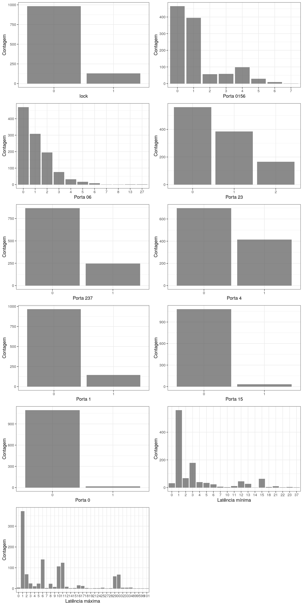
3 Análise bivariada
Análise marginal do efeito das variáveis disponíveis nas variáveis de interesse. Isto é, análise da influência das variáveis nas latências mínima e máxima.
3.1 Tabelas
As tabelas para análise bivariada trazem os níveis da variável de interesse, a latência mínima média para cada nível e seu desvio padrão. O mesmo é feito para a latência máxima e, na última coluna, é mostrado o número de observações que há em cada nível.
3.1.1 lock
| Niveis | min_lat | desv_pad_min | max_lat | desv_pad_max | n |
|---|---|---|---|---|---|
| 0 | 2.425 | 3.205 | 5.763 | 5.577 | 974 |
| 1 | 13.88 | 1.5 | 29.78 | 1.118 | 129 |
3.1.2 p0156
| Niveis | min_lat | desv_pad_min | max_lat | desv_pad_max | n |
|---|---|---|---|---|---|
| 0 | 2.266 | 2.624 | 4.865 | 4.336 | 458 |
| 1 | 1.6 | 1.095 | 4.914 | 4.484 | 395 |
| 2 | 4.807 | 2.401 | 10.67 | 5.218 | 57 |
| 3 | 5.086 | 6.018 | 13.31 | 10.78 | 58 |
| 4 | 14.36 | 3.753 | 28.56 | 4.756 | 98 |
| 5 | 13.52 | 2.37 | 29.21 | 1.264 | 29 |
| 6 | 14.25 | 1.389 | 32.5 | 1.927 | 8 |
3.1.3 p06
| Niveis | min_lat | desv_pad_min | max_lat | desv_pad_max | n |
|---|---|---|---|---|---|
| 0 | 2.043 | 2.074 | 5.075 | 4.184 | 467 |
| 1 | 2.461 | 4.369 | 4.837 | 6.289 | 306 |
| 2 | 8.138 | 6.007 | 18.57 | 11.7 | 195 |
| 3 | 4.895 | 5.566 | 13.13 | 10.55 | 76 |
| 4 | 7.594 | 3.792 | 15.12 | 8.518 | 32 |
| 5 | 11.41 | 4.273 | 22.82 | 11.41 | 17 |
| 6 | 4.375 | 1.506 | 8 | 5.707 | 8 |
| 7 | 0 | NA | 19 | NA | 1 |
| 8 | 14 | NA | 30 | NA | 1 |
3.1.4 p23
| Niveis | min_lat | desv_pad_min | max_lat | desv_pad_max | n |
|---|---|---|---|---|---|
| 0 | 1.975 | 3.055 | 2.652 | 3.948 | 554 |
| 1 | 2.752 | 3.21 | 9.204 | 3.874 | 383 |
| 2 | 12.07 | 3.893 | 26.87 | 6.333 | 166 |
3.1.5 p237
| Niveis | min_lat | desv_pad_min | max_lat | desv_pad_max | n |
|---|---|---|---|---|---|
| 0 | 3.863 | 5.195 | 7.9 | 10.47 | 857 |
| 1 | 3.419 | 2.916 | 10.91 | 1.53 | 246 |
3.1.6 p4
| Niveis | min_lat | desv_pad_min | max_lat | desv_pad_max | n |
|---|---|---|---|---|---|
| 0 | 1.863 | 3.064 | 3.308 | 4.334 | 688 |
| 1 | 6.916 | 5.42 | 17.3 | 8.869 | 415 |
3.1.7 p1
| Niveis | min_lat | desv_pad_min | max_lat | desv_pad_max | n |
|---|---|---|---|---|---|
| 0 | 3.537 | 4.867 | 8.229 | 9.514 | 961 |
| 1 | 5.303 | 3.854 | 10.89 | 7.706 | 142 |
3.1.8 p15
| Niveis | min_lat | desv_pad_min | max_lat | desv_pad_max | n |
|---|---|---|---|---|---|
| 0 | 3.508 | 4.368 | 8.281 | 9.144 | 1073 |
| 1 | 12.93 | 8.654 | 19 | 10.44 | 30 |
3.1.9 p0
| Niveis | min_lat | desv_pad_min | max_lat | desv_pad_max | n |
|---|---|---|---|---|---|
| 0 | 3.534 | 4.356 | 8.322 | 9.127 | 1089 |
| 1 | 21.71 | 0.914 | 28 | 3.464 | 14 |
3.2 Análise gráfica
Análise gráfica do efeito marginal das variáveis em estudo sobre as variáveis de interesse (latências). Para as variáveis numéricas foram produzidos diagramas de dispersão com uma linha de tendência linear. para as variáveis categóricas foram produzidos box-plots para os níveis dos fatores. O último gráfico mostra a relação entre as latências mínima e máxima.
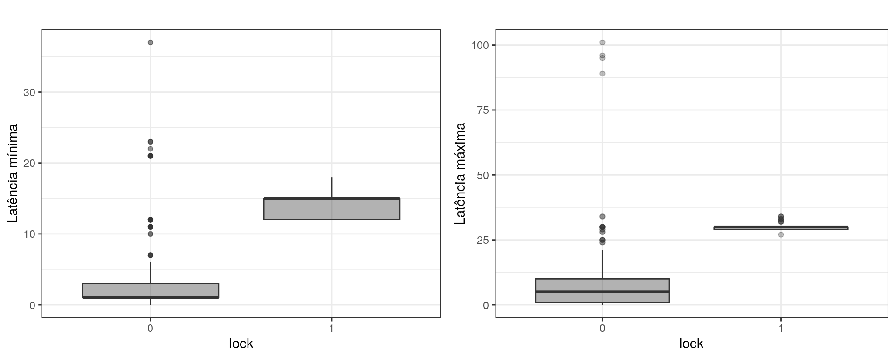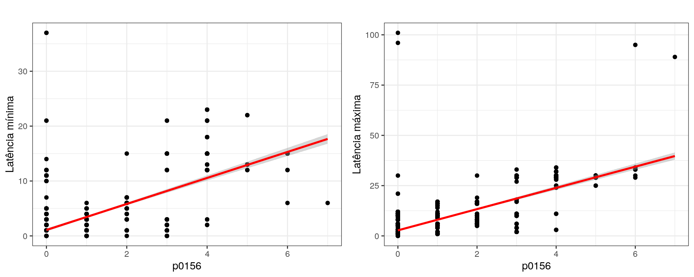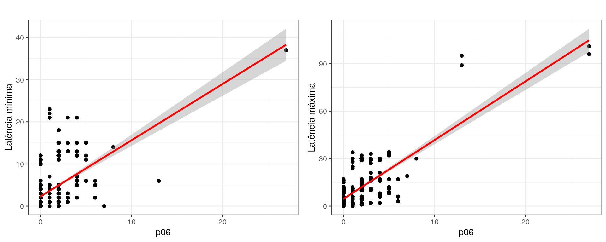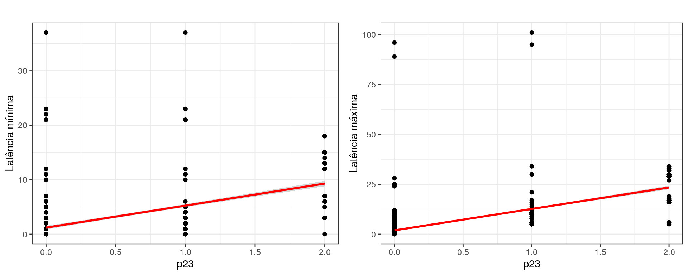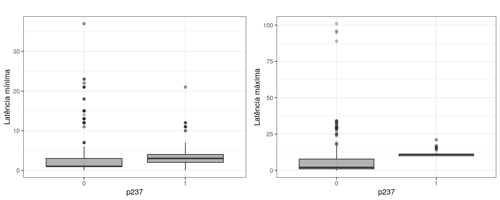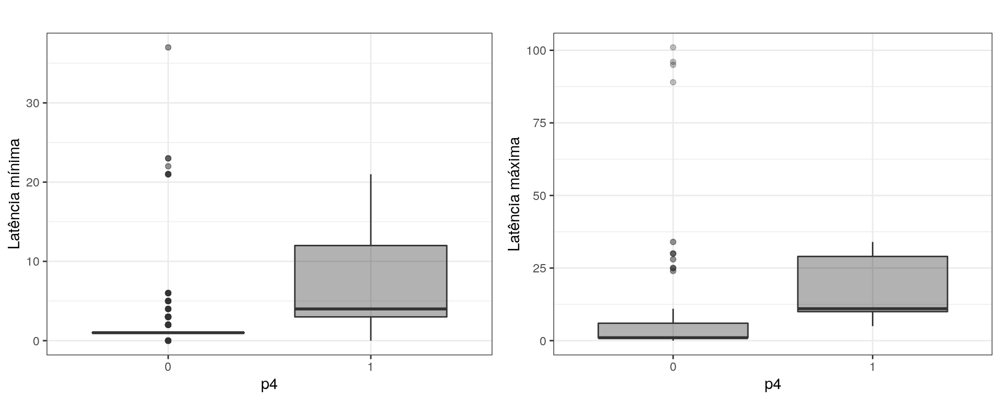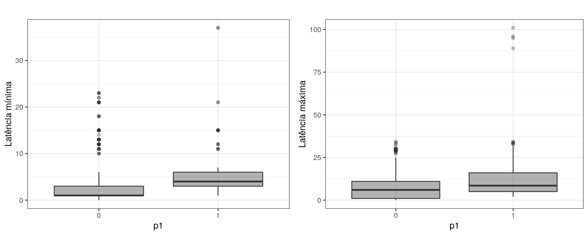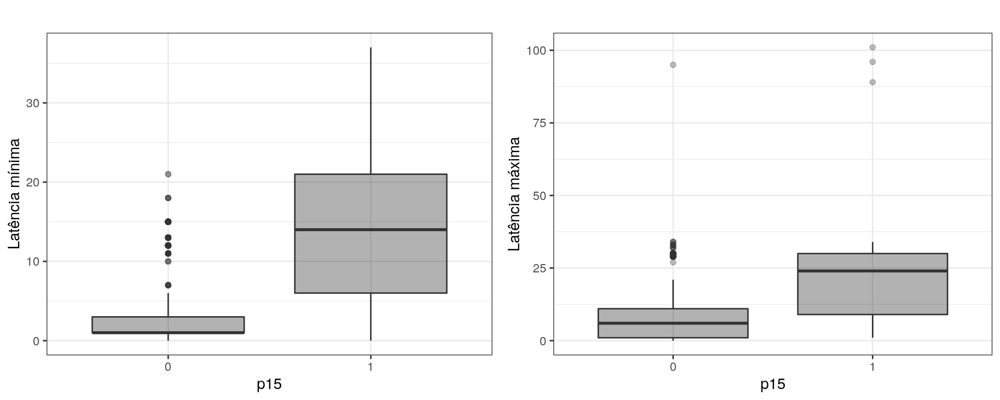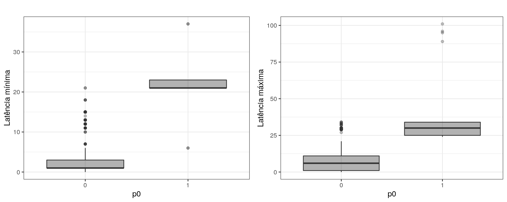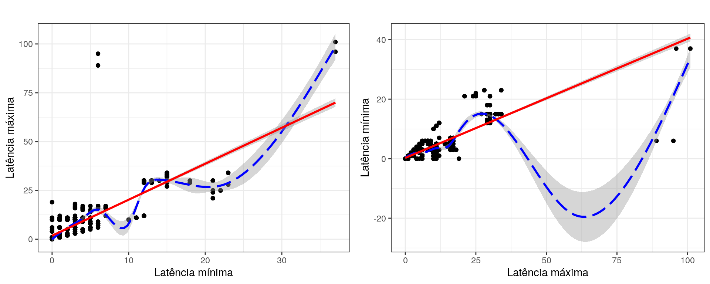
3.3 Correlograma
O coeficiente de correlação de pearson é uma alternativa para verificar a associação entre um par de variáveis. O valor calculado do coeficiente de correlação de Pearson quantifica a força de associação linear entre duas variáveis, ou seja, como as variações dos valores de uma variável afetam a outra.
O coeficiente de correlação varia de -1 a 1 sendo que:
Valores negativos indicam correlação negativa, isto é, a medida que os valores de uma variável aumentam, os valores da outra diminuem.
Valores positivos indicam correlação positiva, isto é, a medida que os valores de uma variável aumentam, os valores da outra também aumentam.
Valores próximos de 0 indicam ausência de correlação.
O correlograma é uma respresentação gráfica da matriz de correlações de Pearson obtida de uma dada matriz numérica.
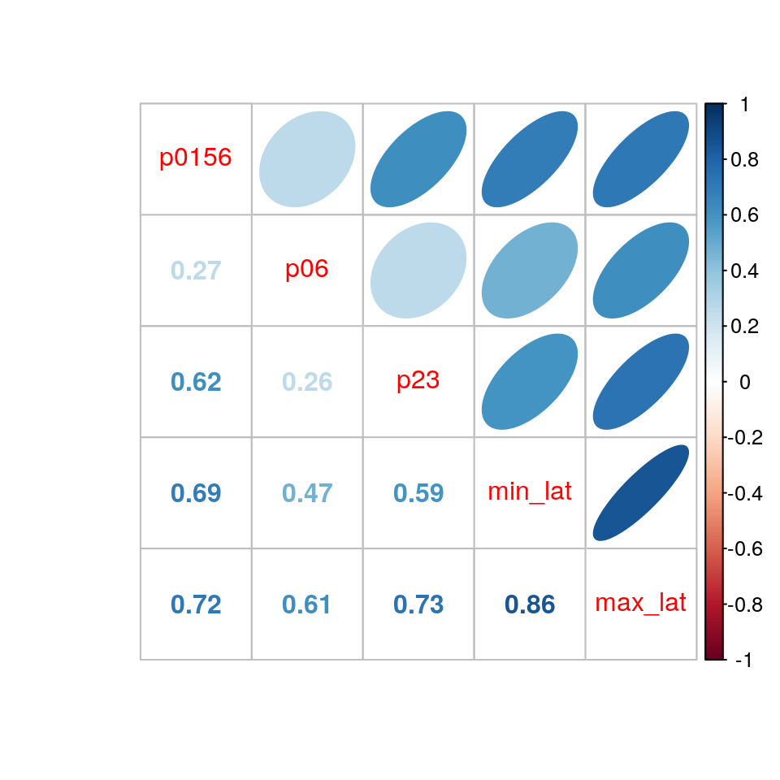

|

|